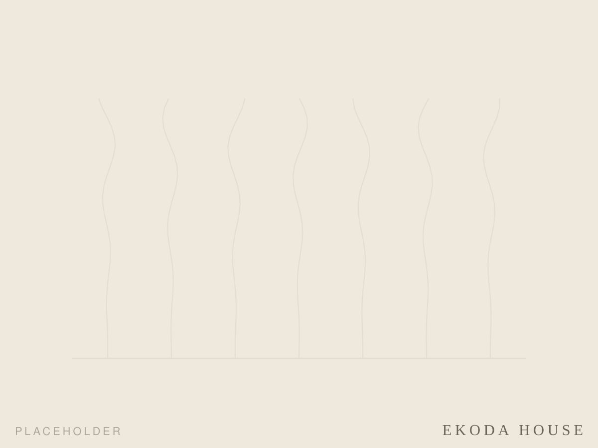
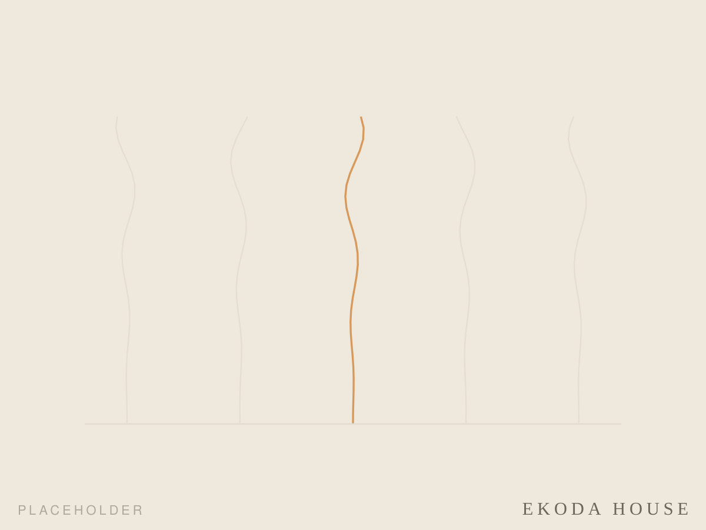
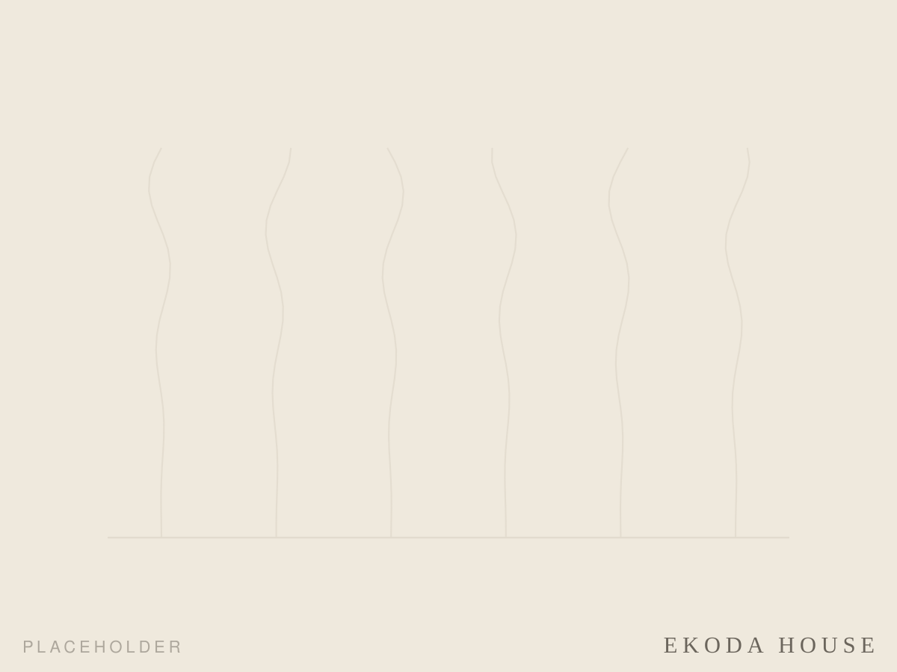
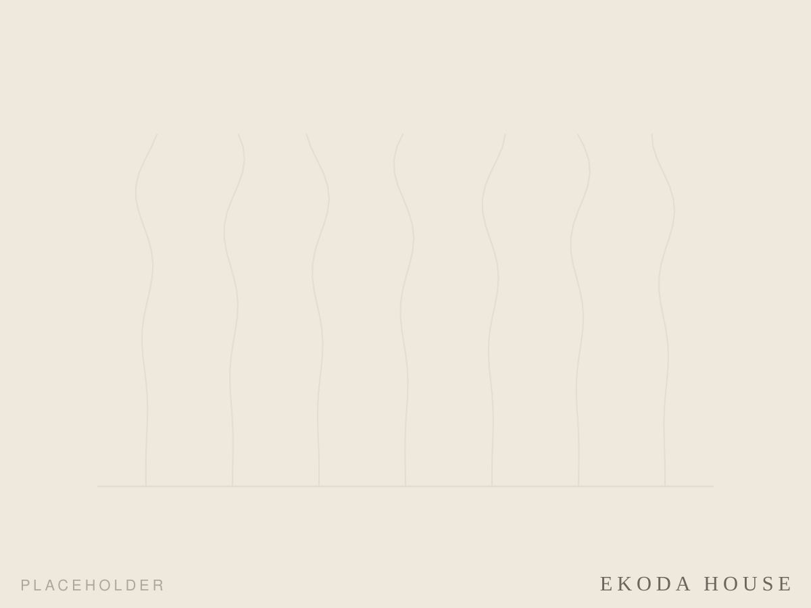
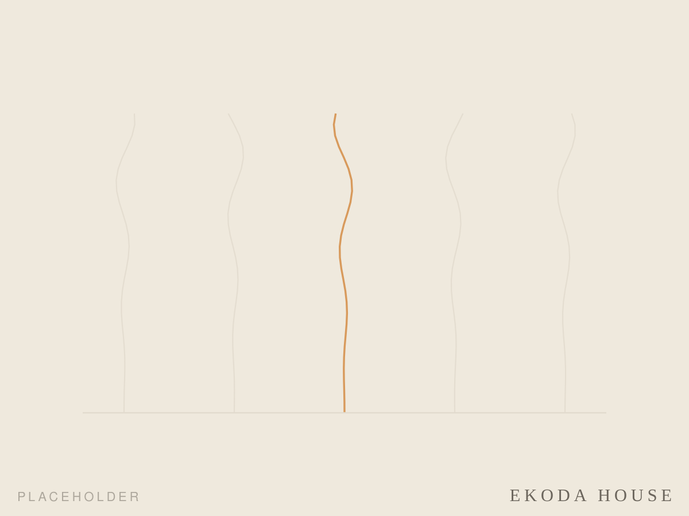
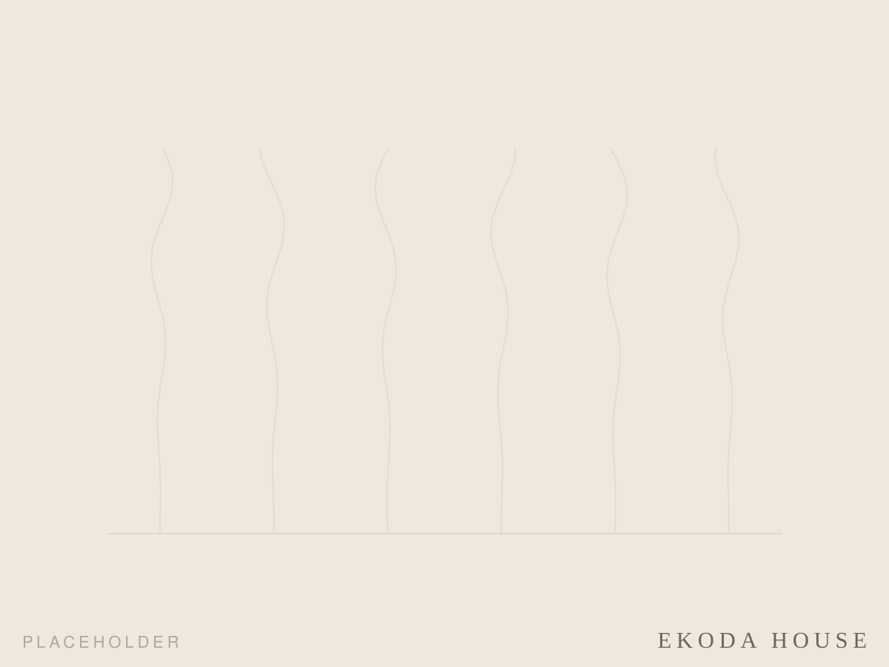
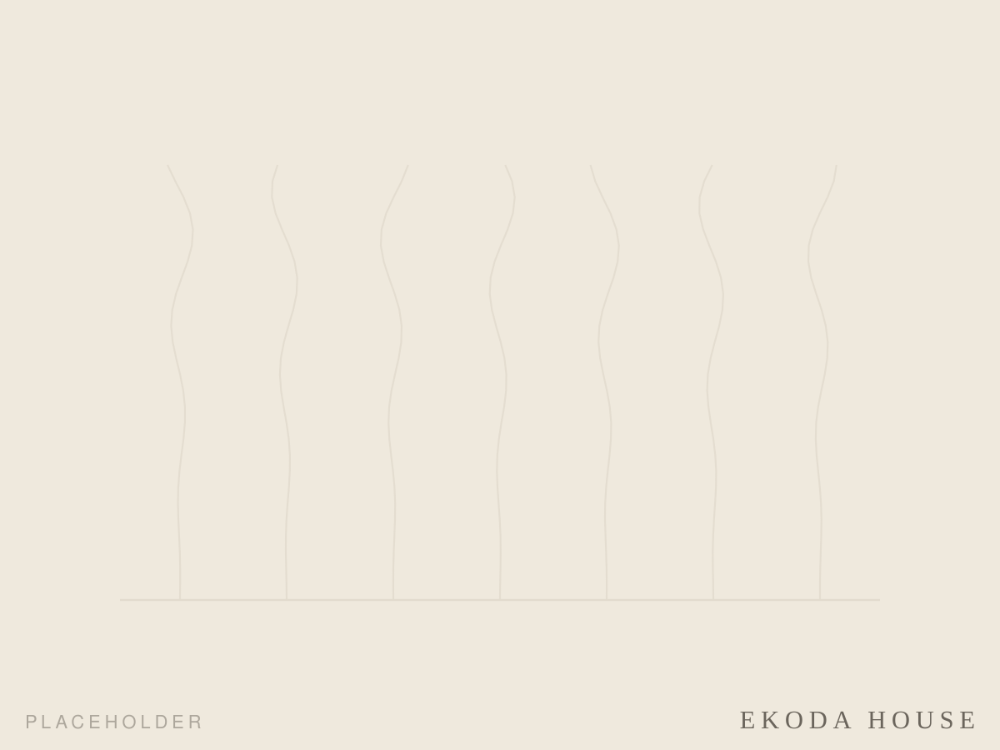

Architecture ・ 自邸
Room above Ekoda-yu
家業の銭湯「江古田湯」の上にある一室を、自分の手で少しずつ建て直しています。設計者が住み手になり、掃除をして、塗り直して、季節ごとに世話をする。手をかけた分だけ、部屋がゆっくりと自分の場所になっていく——その過程そのものが、YU-EN DESIGN STUDIO の「世話する建築」の出発点です。
水と木、湯気の気配とともにある暮らし。完成を急がず、住みながら手を入れ続ける実験住宅として、記録を重ねています。







